14 Distribuzioni di variabili casuali continue
Introduzione
Nel Capitolo 13 abbiamo esplorato le distribuzioni discrete, che modellano fenomeni con esiti numerabili. Ora estendiamo il nostro framework epistemico alle distribuzioni continue, essenziali per rappresentare credenze su quantità che possono assumere qualsiasi valore in un intervallo continuo: tempi, distanze, temperature, proporzioni, tassi.
14.0.1 Perché le distribuzioni continue sono fondamentali
Come illustrato nel Capitolo 12, la variabilità è una caratteristica intrinseca dei fenomeni psicologici. Le distribuzioni di probabilità continue sono uno strumento essenziale per modellare questa variabilità e offrono:
Rappresentazione dell’incertezza parametrica: possiamo quantificare l’incertezza riguardo a parametri come \(\mu\) o \(\sigma^2\) assegnando loro distribuzioni di probabilità continue e trasformare stime puntuali in intervalli probabilistici che riflettono meglio lo stato incompleto delle nostre conoscenze.
-
Modellazione di processi generativi: diverse distribuzioni continue catturano meccanismi fondamentali all’opera nei fenomeni psicologici:
- la distribuzione Normale emerge naturalmente dal Teorema del Limite Centrale quando un fenomeno risulta dalla somma di molte piccole influenze indipendenti;
- la distribuzione Esponenziale descrive processi “senza memoria”, come i tempi di attesa tra eventi rari.
Flessibilità nella specificazione dei prior: le distribuzioni continue offrono un repertorio di forme (da prior piatti a informativi, da simmetrici a robusti) che possiamo adattare per codificare diversi stati di conoscenza preliminare nella formulazione di modelli bayesiani.
Efficienza computazionale nell’aggiornamento bayesiano: le famiglie coniugate, in cui prior e posterior appartengono alla stessa famiglia distributiva, semplificano notevolmente il calcolo dell’aggiornamento bayesiano, rendendo l’inferenza analiticamente trattabile e computazionalmente efficiente.
14.0.2 Struttura del capitolo
L’esplorazione delle distribuzioni continue seguirà una progressione epistemologica che parte da conoscenze elementari per arrivare a strutture probabilistiche complesse. Inizieremo con la distribuzione uniforme, che rappresenta il caso di massima ignoranza all’interno di un intervallo definito. Successivamente, ci occuperemo della distribuzione esponenziale, fondamentale per modellare i tempi di attesa e i processi privi di memoria.
La distribuzione normale riceverà una particolare attenzione, in quanto riveste un ruolo centrale nel Teorema del Limite Centrale e si ritrova frequentemente nella modellazione statistica. Esamineremo poi le distribuzioni chi-quadrato e t di Student, che derivano direttamente dalla distribuzione normale e sono strumenti essenziali per l’inferenza statistica.
Concluderemo con l’analisi di tre distribuzioni di fondamentale importanza nell’inferenza bayesiana: la distribuzione beta, prior naturale per i parametri probabilistici; la distribuzione gamma, prior appropriata per i tassi e le varianze; e la distribuzione di Cauchy, prior robusto caratterizzato da code pesanti.
Ogni distribuzione verrà analizzata attraverso una presentazione dettagliata che includerà la definizione matematica formale, l’interpretazione epistemica dei parametri, il ruolo specifico nell’inferenza bayesiana come distribuzione a priori o verosimiglianza, e applicazioni pratiche implementate in linguaggio R.
14.0.3 Continuità con il capitolo precedente
Il Capitolo 13 sulle distribuzioni discrete ha stabilito delle relazioni fondamentali che trovano ora il loro completamento naturale. Abbiamo visto come la distribuzione binomiale abbia la sua controparte continua nella distribuzione Beta, che funge da prior coniugato e permette di aggiornare analiticamente le credenze sul parametro di probabilità. Allo stesso modo, la distribuzione di Poisson si accompagna alla distribuzione Gamma come prior coniugato per il parametro di tasso.
In questo capitolo esploreremo proprio queste distribuzioni continue che completano le coniugazioni bayesiane, fornendo gli strumenti matematici per aggiornare in modo coerente le nostre credenze alla luce di nuove evidenze empiriche. Questa continuità concettuale sottolinea l’eleganza e la coerenza del framework bayesiano, in cui le distribuzioni discrete e continue dialogano armoniosamente nel processo inferenziale.
14.1 La Distribuzione Uniforme Continua
La distribuzione uniforme continua rappresenta un pilastro della teoria delle probabilità e si caratterizza per una densità di probabilità costante su un intervallo definito. Questo modello è particolarmente utile per descrivere fenomeni casuali in cui ogni possibile esito ha la stessa probabilità di verificarsi, come nel caso di uno spinner perfettamente bilanciato o di un generatore di numeri casuali ideale.
14.1.1 Un esempio intuitivo: lo spinner
Consideriamo uno spinner circolare con valori angolari compresi tra 0° e 360°. Se il dispositivo è perfettamente equilibrato, ogni angolo ha la stessa probabilità di essere selezionato dopo una rotazione. Questo esperimento costituisce un’implementazione concreta della distribuzione uniforme sull’intervallo \([0, 360)\).
14.1.2 Simulazione della distribuzione: dal campione piccolo alla convergenza teorica
Per illustrare il comportamento della distribuzione, analizziamo due scenari distinti attraverso simulazioni numeriche.
Caso 1: Campione piccolo (n = 20)
Generiamo 20 valori casuali e visualizziamoli con un istogramma:
set.seed(123) # Riproducibilità dei risultati
spinner_results <- runif(20, min = 0, max = 360)
print(spinner_results) # Output dei dati
#> [1] 103.5 283.8 147.2 317.9 338.6 16.4 190.1 321.3 198.5 164.4 344.5 163.2
#> [13] 243.9 206.1 37.1 323.9 88.6 15.1 118.1 343.6
# Creazione dell'istogramma
ggplot(data.frame(Valori = spinner_results), aes(x = Valori)) +
geom_histogram(
binwidth = 10,
fill = "skyblue",
color = "black",
alpha = 0.5
) +
labs(
x = "Angolo (gradi)",
y = "Frequenza relativa"
) 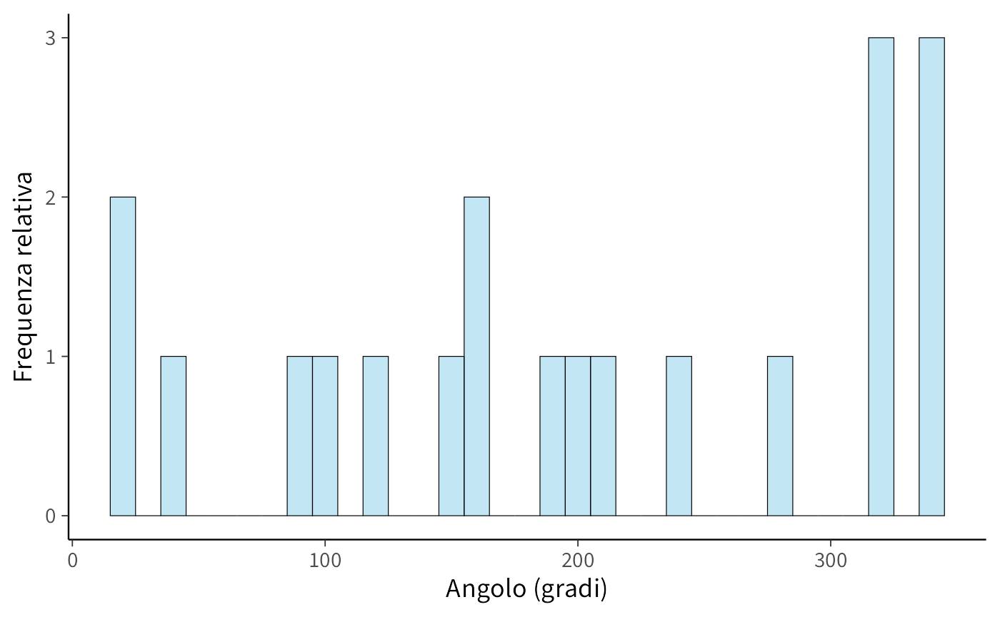
L’istogramma mostra un andamento irregolare, riflettendo la variabilità intrinseca dei piccoli campioni. Questa disomogeneità è prevista e diminuisce con l’aumento della dimensione del campione.
Caso 2: Campione grande (n = 100,000)
Ripetiamo la simulazione con un campione esteso:
spinner_results_large <- runif(100000, min = 0, max = 360)
ggplot(data.frame(Valori = spinner_results_large), aes(x = Valori)) +
geom_histogram(
binwidth = 10,
fill = "skyblue",
color = "black",
alpha = 0.5
) +
labs(
x = "Angolo (gradi)",
y = "Frequenza relativa"
) 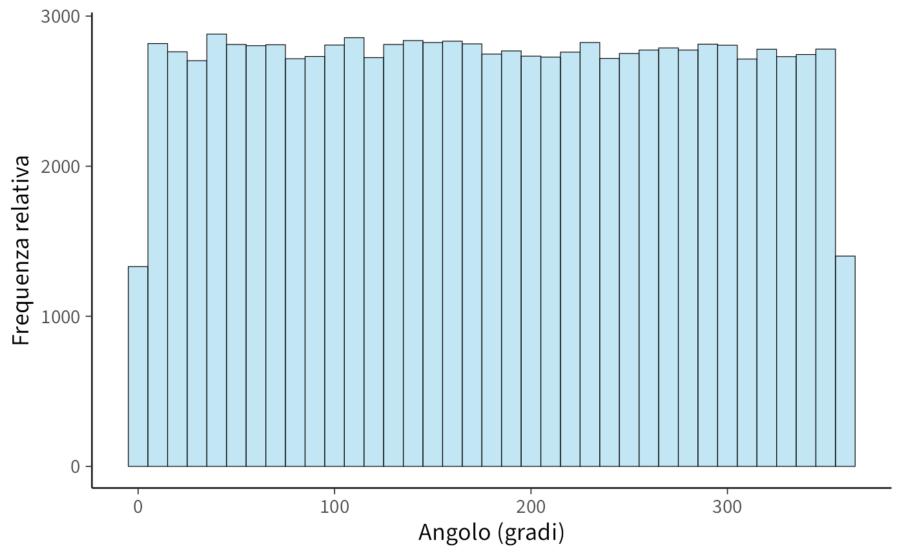
L’istogramma rivela ora un profilo piatto e regolare, in accordo con la forma teorica della distribuzione. Questo risultato dimostra empiricamente la legge dei grandi numeri, secondo cui, aumentando il numero di osservazioni, la distribuzione empirica tende a convergere verso quella teorica.
14.1.3 La Funzione di Densità di Probabilità (PDF)
Per una variabile casuale \(X \sim \mathcal{U}(a, b)\), la funzione di densità di probabilità è definita come:
\[ f(x) = \begin{cases} \displaystyle \frac{1}{b - a} & \text{per } x \in [a, b], \\ 0 & \text{altrimenti}. \end{cases} \]
Proprietà fondamentali:
L’area totale sotto la curva della funzione di densità risulta unitaria, come verificabile tramite l’integrale \(\int_{a}^{b} \frac{1}{b - a} dx = 1\). La densità assume valore nullo al di fuori dell’intervallo \([a, b]\), concentrando tutta la massa probabilistica all’interno di questo dominio.
Applicazione allo spinner:
Nel caso dello spinner che può fermarsi su qualsiasi angolo tra 0° e 360°, la funzione di densità assume la forma \(f(x) = \frac{1}{360}\) per \(x \in [0, 360]\).
Visualizzazione grafica in R:
x <- seq(-50, 410, length.out = 500)
density_uniform <- dunif(x, min = 0, max = 360)
ggplot(data.frame(x = x, y = density_uniform), aes(x = x, y = y)) +
geom_line(linewidth = 1.2, color = "blue") +
geom_vline(xintercept = c(0, 360), linetype = "dashed", color = "red") +
labs(
x = "x (gradi)",
y = "Densità f(x)"
) +
xlim(-50, 410) 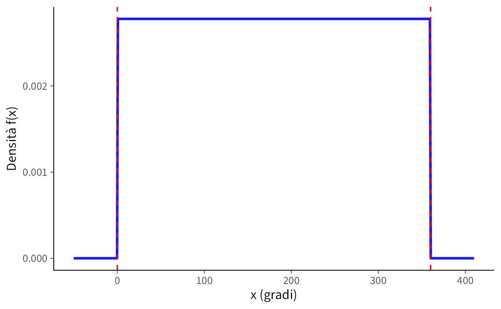
Il grafico evidenzia la densità costante nell’intervallo \([0, 360]\) e l’assenza di densità probabilistica al di fuori di esso.
14.1.4 Calcolo delle Probabilità: metodo geometrico e funzionale
La probabilità che \(X\) assuma valori in un sottointervallo \([c, d] \subseteq [a, b]\) è data dal rapporto tra la lunghezza del sottointervallo e la lunghezza totale dell’intervallo:
\[ P(c \leq X \leq d) = \frac{d - c}{b - a}. \]
Esempio applicativo:
Calcoliamo la probabilità che lo spinner si fermi tra 150° e 250°:
\[ P(150 \leq X \leq 250) = \frac{250 - 150}{360} = \frac{100}{360} = \frac{5}{18} \approx 0.2778. \]
Conferma numerica in R:
Rappresentazione grafica dell’area di probabilità:
ggplot(data.frame(x = x, fx = density_uniform), aes(x = x, y = fx)) +
geom_line(linewidth = 1.2, color = "blue") +
geom_area(
data = subset(data.frame(x, fx = density_uniform), x >= 150 & x <= 250),
aes(x = x, y = fx),
fill = "gray",
alpha = 0.5
) +
labs(
x = "x (gradi)",
y = "Densità f(x)"
) 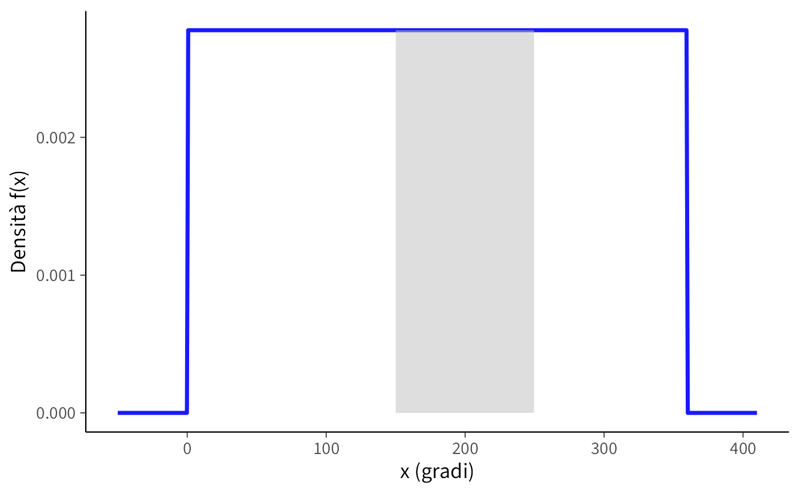
L’area grigia corrisponde esattamente al valore di probabilità calcolato, illustrando visivamente il concetto di integrazione della funzione di densità.
14.1.5 Proprietà fondamentali: media e varianza
Per \(X \sim \mathcal{U}(a, b)\) valgono le seguenti relazioni:
Valore atteso:
Il valore atteso, corrispondente al centro della distribuzione, è dato da:
\[ E(X) = \frac{a + b}{2}. \]
Nel caso dello spinner, \(E(X) = (0 + 360)/2 = 180\) gradi.
Varianza:
La varianza, che misura la dispersione dei valori attorno al valor medio, è espressa da:
\[ \text{Var}(X) = \frac{(b - a)^2}{12}. \]
Per lo spinner, \(\text{Var}(X) = (360 - 0)^2 / 12 = 10,\!800\) gradi².
14.1.6 Implementazione in R: funzioni principali
R fornisce quattro funzioni fondamentali per lavorare con la distribuzione uniforme:
-
runif(): Genera valori casuali dalla distribuzione uniforme -
dunif(): Calcola il valore della funzione di densità \(f(x)\) -
punif(): Calcola la funzione di distribuzione cumulativa \(P(X \leq x)\) -
qunif(): Determina il quantile corrispondente a una probabilità specificata
Esempi operativi:
# Generazione di 5 numeri casuali nell'intervallo [0, 1]
runif(5, min = 0, max = 1)
#> [1] 0.0372 0.9278 0.4480 0.9159 0.3558
# Valore della densità in x = 0.5 per U(0,1)
dunif(0.5, min = 0, max = 1)
#> [1] 1
# Probabilità cumulativa fino a x = 0.8 per U(0,1)
punif(0.8, min = 0, max = 1)
#> [1] 0.8
# Calcolo del quantile corrispondente al 50° percentile (mediana)
qunif(0.5, min = 0, max = 360)
#> [1] 18014.2 La Distribuzione esponenziale
La distribuzione esponenziale rappresenta una distribuzione continua fondamentale per modellare il tempo di attesa fino al verificarsi di un evento casuale. La sua caratteristica distintiva risiede nella proprietà di assenza di memoria, che la rende unica nel panorama delle distribuzioni probabilistiche.
14.2.1 La proprietà di assenza di memoria: un concetto chiave
L’assenza di memoria implica che la probabilità che un evento si verifichi in un intervallo futuro è indipendente dal tempo già trascorso dall’ultima occorrenza.
Esempio intuitivo:
consideriamo una persona che sperimenta attacchi di ansia improvvisi, dove il tempo tra un episodio e il successivo segue una distribuzione esponenziale. Se l’individuo non ha avuto attacchi nelle ultime due settimane, la probabilità che ne sperimenti uno nei prossimi tre giorni risulta identica a quella di una persona appena uscita da un episodio, considerando lo stesso intervallo temporale di tre giorni.
Questa analogia illustra efficacemente la proprietà di assenza di memoria: il tempo trascorso dall’ultimo evento non influenza la probabilità futura di occorrenza. Il sistema non accumula stress né riduce il rischio con il passare del tempo senza episodi, riflettendo dinamiche tipiche di processi psicologici non legati a meccanismi di apprendimento o adattamento.
Parametri chiave nell’esempio:
- \(\lambda\) (tasso): frequenza media degli attacchi (es. 0.1 episodi/giorno);
- \(\mu = 1/\lambda\) (media): tempo medio tra due episodi consecutivi (es. 10 giorni).
La distribuzione esponenziale modellizza quindi situazioni in cui il comportamento risulta puramente stocastico e non influenzato dalla storia precedente, come certi pattern di ansia, impulsività o reazioni fisiologiche a stimoli neutri.
14.2.2 Struttura matematica: funzione di densità e parametri
La funzione di densità di probabilità di una variabile \(X \sim \text{Exp}(\lambda)\) è definita come:
\[
f(x) =
\begin{cases}
\lambda e^{-\lambda x} & \text{per } x \geq 0, \\
0 & \text{altrimenti},
\end{cases}
\]
dove:
-
\(\lambda\) (tasso): numero medio di eventi per unità di tempo (es. 0.25 episodi/ora);
- \(\mu = 1/\lambda\) (media): tempo medio di attesa per l’evento (es. 4 ore/episodio).
Forma alternativa con \(\mu\):
\[
f(x) = \frac{1}{\mu} e^{-x/\mu} \quad \text{per } x \geq 0.
\]
14.2.3 Proprietà fondamentali
Per \(X \sim \text{Exp}(\lambda)\) valgono le seguenti proprietà:
Valore atteso: \(E(X) = \frac{1}{\lambda}\) - rappresenta il tempo medio di attesa per l’evento.
Varianza: \(\text{Var}(X) = \frac{1}{\lambda^2}\) - la dispersione cresce con il quadrato dell’inverso del tasso.
Deviazione standard: \(\sigma_X = \frac{1}{\lambda}\) - misura lo spread lineare attorno al valor medio.
Esempio applicato:
se il tempo medio di pubblicazione dei voti di un esame universitario è \(\mu = 4\) giorni (\(\lambda = 0.25\)), la funzione di densità assume la forma:
\[
f(x) = \frac{1}{4} e^{-x/4} \quad \text{per } x \geq 0.
\]
14.2.4 Visualizzazione della densità in R
# Definizione dei parametri
mu <- 4
lambda <- 1 / mu # 0.25
# Generazione dei punti per il grafico
x <- seq(0, 20, by = 0.1)
pdf <- dexp(x, rate = lambda)
# Creazione del grafico
ggplot(data.frame(x = x, y = pdf), aes(x = x, y = y)) +
geom_line(linewidth = 1.2, color = "darkblue") +
labs(
x = "Tempo di attesa (giorni)",
y = "Densità f(x)",
title = paste("Distribuzione esponenziale (μ =", mu, "giorni)")
) +
theme_minimal()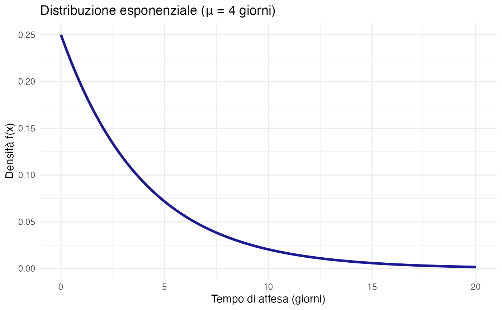
Il grafico mostra un decadimento esponenziale caratteristico: la densità di probabilità decresce rapidamente all’aumentare del tempo di attesa.
14.2.5 Calcolo delle Probabilità: Tre Scenari Applicativi
Scenario 1: probabilità cumulativa.
Calcoliamo \(P(X \leq 1.5)\) - la probabilità che il voto venga pubblicato entro un giorno e mezzo dall’esame:
\[ P(X \leq 1.5) = 1 - e^{-\lambda \cdot 1.5} = 1 - e^{-0.25 \cdot 1.5} \approx 0.312. \]
Implementazione in R:
pexp(1.5, rate = lambda) # Restituisce 0.312
#> [1] 0.313Visualizzazione grafica:
# Area sotto la curva per X <= 1.5
ggplot(data.frame(x = x, y = pdf), aes(x = x, y = y)) +
geom_line(linewidth = 1.2, color = "darkblue") +
geom_area(
data = subset(data.frame(x, y = pdf), x <= 1.5),
aes(x = x, y = y),
fill = "steelblue",
alpha = 0.5
) +
labs(
x = "Tempo (giorni)",
y = "Densità",
title = "Probabilità cumulativa P(X ≤ 1.5)"
) +
theme_minimal()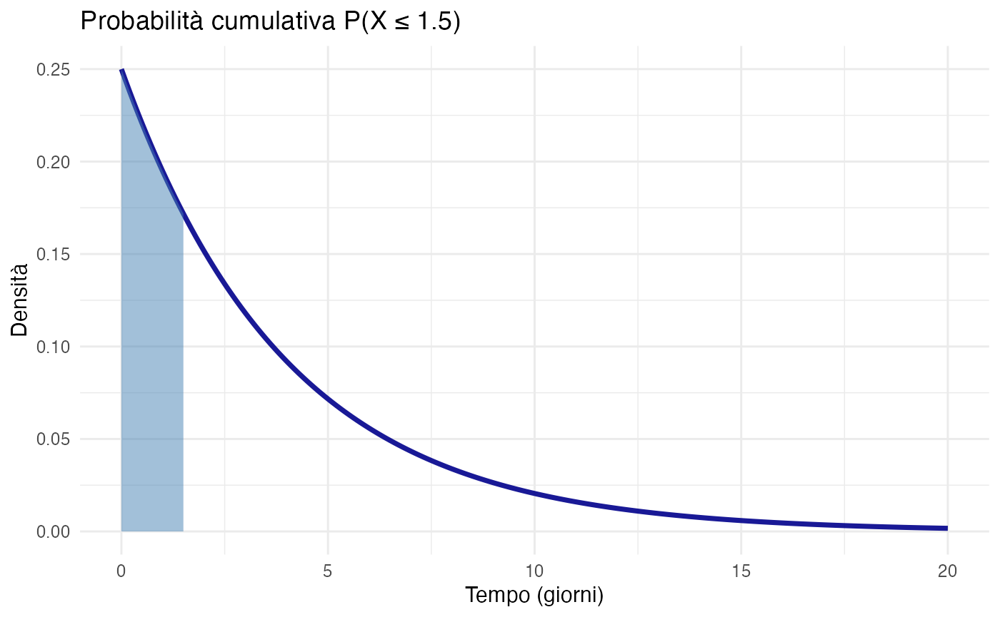
Scenario 2: Probabilità intervallo.
Calcoliamo \(P(1 \leq X \leq 6)\) - la probabilità che il voto venga pubblicato tra 1 e 6 giorni dopo l’esame:
\[ P(1 \leq X \leq 6) = F(6) - F(1) = e^{-0.25 \cdot 1} - e^{-0.25 \cdot 6} \approx 0.491. \]
Implementazione in R:
Visualizzazione grafica:
# Area per 1 <= X <= 6
ggplot(data.frame(x = x, y = pdf), aes(x = x, y = y)) +
geom_line(linewidth = 1.2, color = "darkblue") +
geom_area(
data = subset(data.frame(x, y = pdf), x >= 1 & x <= 6),
aes(x = x, y = y),
fill = "steelblue",
alpha = 0.5
) +
labs(
x = "Tempo (giorni)",
y = "Densità",
title = "Probabilità intervallo P(1 ≤ X ≤ 6)"
) +
theme_minimal()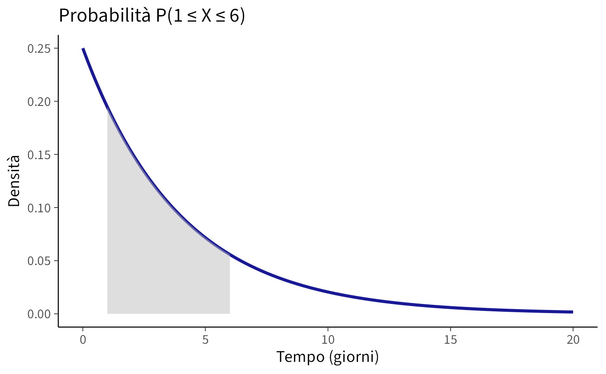
Scenario 3: Probabilità della coda.
Calcoliamo \(P(X \geq 5.5)\) - la probabilità di un ritardo nella pubblicazione superiore a 5.5 giorni:
\[ P(X \geq 5.5) = 1 - P(X \leq 5.5) = e^{-0.25 \cdot 5.5} \approx 0.252. \]
Implementazione in R:
Visualizzazione grafica:
# Area per X >= 5.5
ggplot(data.frame(x = x, y = pdf), aes(x = x, y = y)) +
geom_line(linewidth = 1.2, color = "darkblue") +
geom_area(
data = subset(data.frame(x, y = pdf), x >= 5.5),
aes(x = x, y = y),
fill = "steelblue",
alpha = 0.5
) +
labs(
x = "Tempo (giorni)",
y = "Densità",
title = "Probabilità della coda P(X ≥ 5.5)"
) +
theme_minimal()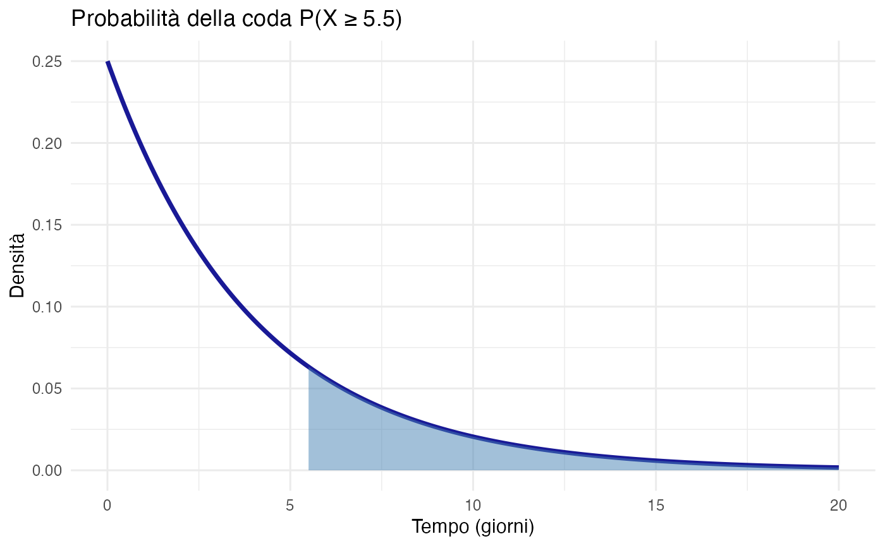
14.2.6 Simulazione e convergenza alla teoria
Generiamo 1,000,000 di osservazioni da \(\text{Exp}(\lambda = 0.25)\) e confrontiamo l’istogramma con la funzione di densità teorica:
set.seed(123)
simulated_data <- rexp(1e6, rate = lambda)
ggplot(data.frame(x = simulated_data), aes(x = x)) +
geom_histogram(
aes(y = after_stat(density)),
bins = 100,
fill = "skyblue",
color = "black",
alpha = 0.6
) +
geom_line(
data = data.frame(x = x, y = pdf),
aes(x = x, y = y),
color = "red",
linewidth = 1.2
) +
coord_cartesian(xlim = c(0, 20)) +
labs(
x = "Tempo di attesa (giorni)",
y = "Densità",
title = "Confronto dati simulati e PDF teorica"
) +
theme_minimal()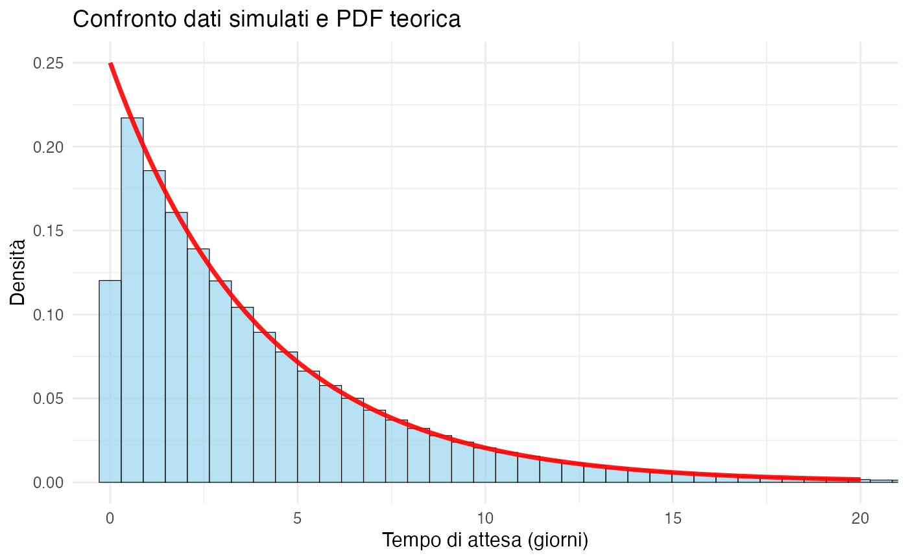
L’istogramma si allinea perfettamente alla curva teorica, dimostrando empiricamente la Legge dei Grandi Numeri.
14.2.7 Funzioni R per la distribuzione esponenziale
R offre quattro funzioni fondamentali per lavorare con la distribuzione esponenziale:
-
dexp(x, rate): calcola il valore della funzione di densità nel punto x -
pexp(q, rate): calcola la funzione di ripartizione \(P(X \leq q)\) -
qexp(p, rate): determina il quantile corrispondente alla probabilità p -
rexp(n, rate): genera n valori casuali dalla distribuzione esponenziale
Esempi di utilizzo:
14.3 Distribuzione normale
La distribuzione normale (o gaussiana) rappresenta una distribuzione continua fondamentale per modellare fenomeni naturali, sociali e psicologici. La sua importanza deriva principalmente dal Teorema del Limite Centrale, che garantisce la convergenza alla normalità per somme di variabili casuali indipendenti.
14.3.1 La famiglia delle distribuzioni normali
Ogni distribuzione normale è definita da due parametri fondamentali:
- \(\mu\) (media): determina il centro della distribuzione;
- \(\sigma\) (deviazione standard): quantifica la dispersione dei dati attorno al valore medio.
La funzione di densità di probabilità è espressa da:
\[ f(y; \mu, \sigma) = \frac{1}{\sigma\sqrt{2\pi}} e^{-\frac{(y - \mu)^2}{2\sigma^2}}. \tag{14.1}\]
14.3.2 Distribuzione normale standardizzata
La distribuzione normale standardizzata costituisce un caso speciale con \(\mu = 0\) e \(\sigma = 1\). Qualsiasi variabile \(Y \sim \mathcal{N}(\mu, \sigma)\) può essere trasformata in una normale standard attraverso la relazione:
\[ Z = \frac{Y - \mu}{\sigma}. \tag{14.2}\]
Questa trasformazione preserva la forma della distribuzione mentre converte i valori in unità di deviazione standard (punteggi Z), permettendo confronti universali tra distribuzioni diverse.
14.3.2.1 Relazione tra Deviazione Standard e Distribuzione
La regola empirica 68-95-99 si applica a tutte le distribuzioni normali, indipendentemente dai valori specifici di \(\mu\) e \(\sigma\):
- 68.3% dei dati si colloca entro \(\pm 1\sigma\) dalla media;
-
95.4% entro \(\pm 2\sigma\);
- 99.7% entro \(\pm 3\sigma\).
Per intervalli specifici comunemente utilizzati in test statistici:
- \(\pm 1.96\sigma\) copre il 95% dei dati (corrispondente all’intervallo di confidenza al 95%);
- \(\pm 2.576\sigma\) copre il 99% (intervallo di confidenza al 99%).
14.3.3 Origini storiche e connessione alla distribuzione binomiale
Abraham de Moivre osservò che distribuzioni binomiali con numero di prove \(n\) elevato approssimano una distribuzione normale. Ad esempio:
- con \(n=10\) e \(p=0.9\), la distribuzione binomiale presenta asimmetria marcata;
- con \(n=1000\), la forma diventa simmetrica e campanulare, avvicinandosi alla normale.
14.3.4 Simulazione di passeggiate casuali
La distribuzione normale emerge naturalmente come risultato della somma di un gran numero di effetti casuali indipendenti, un principio formalizzato dal Teorema del Limite Centrale. Questo la rende ideale per modellare:
- errori di misurazione, dove piccole fluttuazioni casuali (strumentali, ambientali, umane) si combinano;
-
fenomeni biologici multifattoriali come altezza, peso o QI, influenzati da decine di fattori genetici, ambientali e nutrizionali che interagiscono in modo additivo;
- processi sociali come i punteggi dei test, dove il risultato finale rappresenta il prodotto cumulativo di abilità innate, studio, stato emotivo e altri fattori.
Simulazione con passeggiate casuali
Per visualizzare concretamente questo fenomeno, consideriamo una passeggiata casuale unidimensionale semplificata:
-
Impostazione sperimentale:
- 1,000 partecipanti partono dalla posizione iniziale 0;
- ogni partecipante compie 16 passi consecutivi;
- ogni passo è determinato da un generatore casuale che assegna uno spostamento compreso tra -1 e +1 unità (simulando l’effetto di piccole perturbazioni indipendenti).
-
Dinamica del processo:
la posizione finale di ciascun partecipante corrisponde alla somma algebrica degli spostamenti casuali. Nonostante ogni passo individuale segua una distribuzione uniforme, la distribuzione aggregata delle posizioni finali di tutti i partecipanti mostrerà la caratteristica forma a campana della distribuzione normale.
# Parametri della simulazione
numero_passi <- 16
ripetizioni <- 1000
# Generazione di passeggiate casuali
set.seed(123)
x <- matrix(0, nrow = numero_passi + 1, ncol = ripetizioni)
for (i in 1:ripetizioni) {
passi <- runif(numero_passi, min = -1, max = 1)
x[-1, i] <- cumsum(passi)
}
# Preparazione dati per la visualizzazione
df <- data.frame(
Passo = rep(0:numero_passi, times = ripetizioni),
Distanza = as.vector(x)
)
# Grafico delle passeggiate casuali
ggplot(
df,
aes(
x = Passo,
y = Distanza,
group = rep(1:ripetizioni, each = numero_passi + 1))
) +
geom_line(color = "blue", alpha = 0.05) +
labs(
title = "Passeggiate Casuali",
x = "Numero di Passi",
y = "Distanza dall'Origine"
) +
theme_minimal()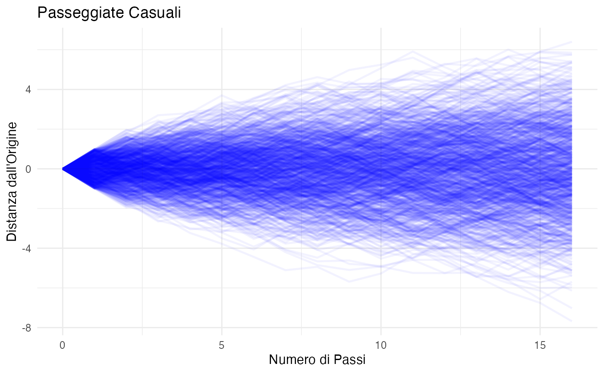
# Simulazione delle posizioni finali
set.seed(123)
n_partecipanti <- 1000
n_passi <- 16
# Genera spostamenti casuali nell'intervallo [-1, +1]
spostamenti <- matrix(runif(n_partecipanti * n_passi, min = -1, max = 1), ncol = n_passi)
# Calcola le posizioni finali come somma degli spostamenti
posizioni_finali <- rowSums(spostamenti)
# Visualizzazione della distribuzione risultante
ggplot(data.frame(Posizione = posizioni_finali), aes(x = Posizione)) +
geom_histogram(aes(y = after_stat(density)), bins = 30, fill = "lightblue", alpha = 0.7) +
stat_function(fun = dnorm, args = list(mean = mean(posizioni_finali), sd = sd(posizioni_finali)), color = "red", linewidth = 1) +
labs(
title = "Distribuzione delle posizioni finali",
x = "Posizione",
y = "Densità"
) +
theme_minimal()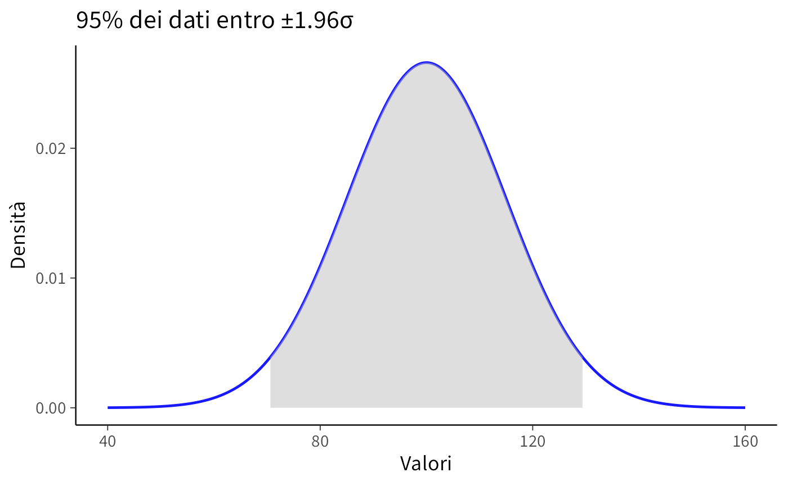
Risultato atteso:
l’istogramma delle posizioni finali aderirà alla curva rossa (distribuzione normale teorica), dimostrando come la combinazione di piccole variazioni casuali produca una distribuzione gaussiana, anche partendo da distribuzioni non-normali per i singoli passi. Questo esperimento illustra l’onnipresenza della distribuzione normale in contesti reali governati da molteplici fattori indipendenti.
Giustificazione del numero di passi.
La scelta di 16 passi non è arbitraria:
- un numero ridotto di passi (es. 3-5) produrrebbe una distribuzione ancora vicina all’uniforme;
- con 16 passi, la simmetria e la curvatura tipica della gaussiana diventano chiaramente riconoscibili senza richiedere simulazioni computazionalmente intensive.
14.3.5 Proprietà fondamentali
-
Valore atteso: \(\mathbb{E}(Y) = \mu\).
- Varianza: \(\mathbb{V}(Y) = \sigma^2\).
14.3.6 Funzioni R per la distribuzione normale
R fornisce quattro funzioni fondamentali per lavorare con la distribuzione normale:
-
dnorm(x, mean, sd): calcola il valore della funzione di densità nel punto \(x\); -
pnorm(q, mean, sd): calcola la probabilità cumulativa \(P(Y \leq q)\); -
qnorm(p, mean, sd): determina il quantile corrispondente alla probabilità \(p\); -
rnorm(n, mean, sd): genera \(n\) valori casuali dalla distribuzione normale.
14.3.7 Visualizzazione delle aree critiche
Le aree sotto la curva corrispondenti a \(\pm 1\sigma\), \(\pm 1.96\sigma\), e \(\pm 3\sigma\) possono essere visualizzate efficacemente in R:
# Visualizzazione dell'intervallo al 95% di confidenza
mu <- 100
sigma <- 15
x <- seq(mu - 4*sigma, mu + 4*sigma, length.out = 1000)
df <- data.frame(x = x, pdf = dnorm(x, mu, sigma))
ggplot(df, aes(x = x, y = pdf)) +
geom_line(color = "blue") +
geom_area(
data = subset(df, x >= mu - 1.96*sigma & x <= mu + 1.96*sigma),
fill = "steelblue",
alpha = 0.5
) +
labs(
title = "Intervallo al 95% di confidenza",
subtitle = "95% dei dati si trova entro ±1.96 deviazioni standard dalla media",
x = "Valori",
y = "Densità"
) +
theme_minimal()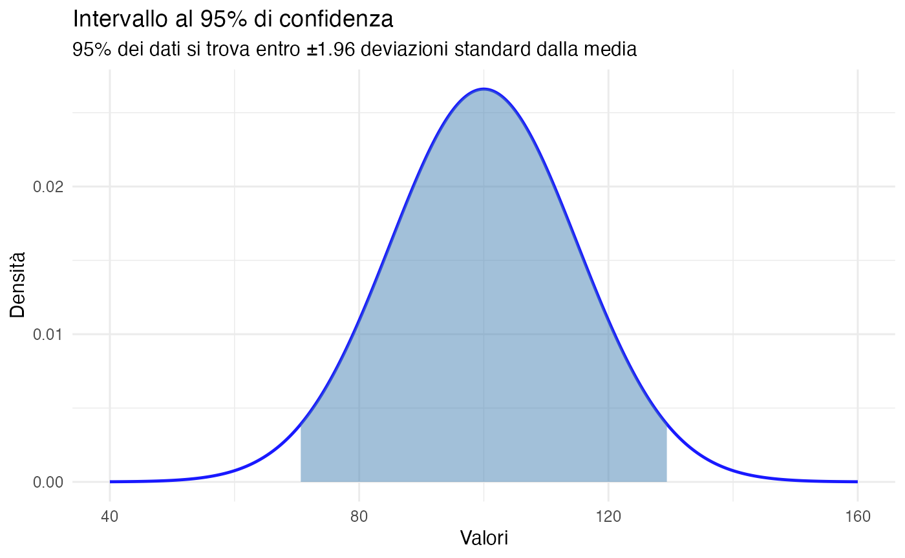
In sintesi, la distribuzione normale standardizzata permette di standardizzare qualsiasi fenomeno gaussiano, rendendo confrontabili dati eterogenei. La relazione tra deviazioni standard e aree sottese è universale: indipendentemente dalla media e varianza originale, il 68-95-99.7% dei dati cadrà sempre entro 1-2-3 deviazioni standard dalla media.
14.4 Distribuzione Chi-Quadrato
La distribuzione \(\chi^2\) deriva dalla distribuzione normale e descrive la somma dei quadrati di \(k\) variabili casuali indipendenti e identicamente distribuite (i.i.d.) che seguono la distribuzione normale standard \(\mathcal{N}(0, 1)\). Una variabile casuale \(\chi^2_{~k}\) con \(k\) gradi di libertà è definita come:
\[ Z_1^2 + Z_2^2 + \dots + Z_k^2, \tag{14.3}\] dove \(Z_1, Z_2, \dots, Z_k \sim \mathcal{N}(0, 1)\). Il parametro \(k\), detto gradi di libertà (\(\nu\)), determina la forma della distribuzione.
14.4.1 Funzione di densità
La densità di probabilità della distribuzione \(\chi^2_{~\nu}\) è data da:
\[ f(x) = C_{\nu} x^{\nu/2 - 1} \exp(-x/2), \quad \text{per } x > 0, \tag{14.4}\] dove \(C_{\nu}\) è una costante di normalizzazione.
14.4.2 Simulazione della Distribuzione Chi-Quadrato
Utilizziamo la definizione per simulare la distribuzione \(\chi^2\) con 3 gradi di libertà.
# Impostare il seed per la riproducibilità
set.seed(1234)
# Generare 1000 valori casuali per 3 variabili gaussiane standard
n <- 1000
var1 <- rnorm(n, mean = 0, sd = 1)
var2 <- rnorm(n, mean = 0, sd = 1)
var3 <- rnorm(n, mean = 0, sd = 1)
# Calcolare la somma dei quadrati
chi_sq_values <- var1^2 + var2^2 + var3^2
# Creare un dataframe per il grafico
data <- data.frame(chi_sq_values = chi_sq_values)
# Istogramma e densità teorica
ggplot(data, aes(x = chi_sq_values)) +
geom_histogram(
aes(y = after_stat(density)),
bins = 30, fill = "lightblue", color = "black", alpha = 0.7
) +
stat_function(fun = dchisq, args = list(df = 3), color = "red", size = 1) +
labs(
title = "Distribuzione Chi-Quadrato (df = 3)",
x = "Valore",
y = "Densità"
)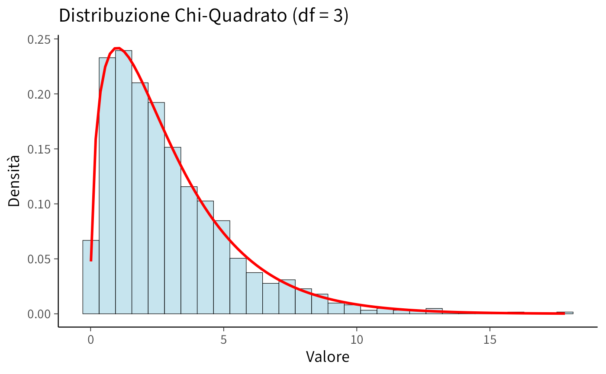
- L’istogramma rappresenta i valori empirici simulati;
- la curva rossa rappresenta la densità teorica della distribuzione \(\chi^2_{~3}\).
14.4.3 Media e varianza empiriche
Calcoliamo la media e la varianza dei valori simulati:
Questi valori possono essere confrontati con le proprietà teoriche della distribuzione \(\chi^2\):
- media: \(\nu = 3\);
- varianza: \(2\nu = 6\).
14.4.4 Grafico per Diversi Gradi di Libertà
Confrontiamo le distribuzioni \(\chi^2\) per diversi valori di \(\nu\).
# Intervallo di x
x <- seq(0, 40, by = 0.1)
# Gradi di libertà
nus <- c(2, 4, 8, 16)
# Creare un dataframe
data <- do.call(rbind, lapply(nus, function(nu) {
data.frame(x = x, f_x = dchisq(x, df = nu), nu = as.factor(nu))
}))
# Grafico
ggplot(data, aes(x = x, y = f_x, color = nu)) +
geom_line(size = 1) +
labs(
x = "x",
y = "f(x)",
color = expression(nu)
) 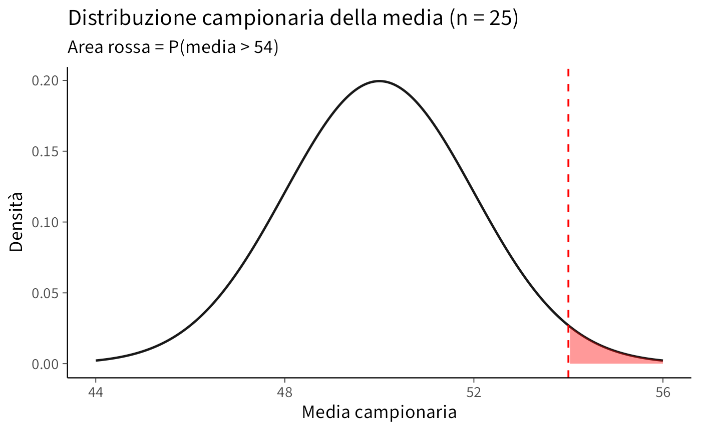
14.4.5 Proprietà della Distribuzione Chi-Quadrato
- Asimmetria: La distribuzione \(\chi^2_{\nu}\) è asimmetrica, ma diventa più simmetrica al crescere di \(\nu\).
- Media: \(\mathbb{E}[\chi^2_{\nu}] = \nu\).
- Varianza: \(\mathbb{V}[\chi^2_{\nu}] = 2\nu\).
- Convergenza: Per \(\nu \to \infty\), \(\chi^2_{\nu} \to \mathcal{N}(\nu, 2\nu)\).
- Somma: La somma di variabili \(\chi^2\) indipendenti con gradi di libertà \(\nu_1, \nu_2, \dots, \nu_k\) segue una distribuzione \(\chi^2\) con \(\nu = \sum_{i=1}^k \nu_i\).
14.4.6 Applicazioni
La distribuzione \(\chi^2\) è utilizzata in molteplici ambiti statistici, tra cui:
- test di indipendenza: per verificare se due variabili categoriche sono indipendenti;
- test di adattamento: per confrontare una distribuzione empirica con una teorica.
14.5 Distribuzione \(t\) di Student
La distribuzione \(t\) di Student rappresenta una delle distribuzioni fondamentali della statistica inferenziale. Essa deriva dalla combinazione delle distribuzioni Normale e Chi-quadrato e risulta particolarmente utile per analizzare campioni di dimensioni ridotte o situazioni in cui la varianza della popolazione non è nota.
14.5.1 Definizione Formale
Siano:
- \(Z \sim \mathcal{N}(0, 1)\) una variabile con distribuzione Normale standard
- \(W \sim \chi^2_{\nu}\) una variabile con distribuzione Chi-quadrato con \(\nu\) gradi di libertà.
Se \(Z\) e \(W\) sono indipendenti, allora la variabile casuale definita come
\[ T = \frac{Z}{\sqrt{\frac{W}{\nu}}} \tag{14.5}\] segue una distribuzione \(t\) di Student con \(\nu\) gradi di libertà, indicata con \(T \sim t_{\nu}\).
14.5.2 Proprietà Fondamentali
Forma della distribuzione: la distribuzione \(t\) presenta simmetria rispetto allo zero, simile alla distribuzione Normale standard, ma caratterizzata da code più pesanti che riflettono una maggiore probabilità di osservare valori estremi.
Influenza dei gradi di libertà: la pesantezza delle code diminuisce all’aumentare dei gradi di libertà \(\nu\). Quando \(\nu \to \infty\), la distribuzione \(t\) converge alla distribuzione Normale standard.
Momenti della distribuzione: il valore atteso risulta \(0\) per \(\nu > 1\), mentre la varianza è data da \(\text{Var}(T) = \frac{\nu}{\nu - 2}\) per \(\nu > 2\). Per \(\nu \leq 2\), la varianza non risulta definita.
Applicazioni principali: nell’approccio frequentista, la distribuzione trova impiego nel test t di Student per il confronto delle medie di due gruppi o per test su una singola media, e nella costruzione di intervalli di confidenza per la media quando la varianza della popolazione non è nota.
14.5.3 Confronto con la distribuzione normale
| Caratteristica | Distribuzione Normale | Distribuzione \(t\) di Student |
|---|---|---|
| Forma | Simmetrica, campanulare | Simmetrica, campanulare |
| Code | Sottili | Pesanti |
| Dipendenza da parametri | Media e varianza | Gradi di libertà |
| Comportamento asintotico | Fissa | Converge alla Normale per \(\nu \to \infty\) |
14.5.4 Visualizzazione della distribuzione \(t\)
Confrontiamo graficamente la distribuzione \(t\) con diversi gradi di libertà e la distribuzione normale standard:
# Creazione dei dati per la visualizzazione
x <- seq(-4, 4, length.out = 1000)
gradi_liberta <- c(1, 2, 5, 10)
# Preparazione del dataframe per il plotting
dati_plot <- data.frame(
x = rep(x, length(gradi_liberta) + 1),
densita = c(
dnorm(x),
dt(x, df = gradi_liberta[1]),
dt(x, df = gradi_liberta[2]),
dt(x, df = gradi_liberta[3]),
dt(x, df = gradi_liberta[4])
),
distribuzione = rep(c("Normale (0,1)",
paste0("t (ν = ", gradi_liberta, ")")),
each = length(x))
)
# Creazione del grafico comparativo
ggplot(dati_plot, aes(x = x, y = densita, color = distribuzione)) +
geom_line(linewidth = 1) +
labs(
title = "Confronto distribuzione t di Student e Normale standard",
x = "Valore",
y = "Densità di probabilità",
color = "Tipo di distribuzione"
) +
theme_minimal() +
scale_color_brewer(palette = "Set1")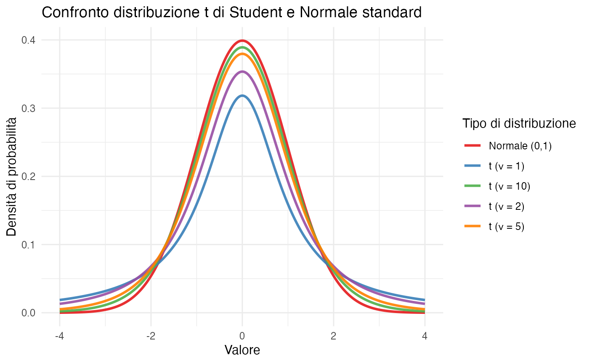
14.5.5 Simulazione della distribuzione \(t\)
Simuliamo una distribuzione \(t\) con 10 gradi di libertà e confrontiamola con la densità teorica corrispondente.
# Impostazione del seed per riproducibilità
set.seed(123)
# Parametri della simulazione
n_simulazioni <- 1000
gradi_liberta <- 10
# Generazione di valori dalla distribuzione t
valori_t <- rt(n_simulazioni, df = gradi_liberta)
# Preparazione dati per la visualizzazione
dati_simulazione <- data.frame(valori_t = valori_t)
# Creazione dell'istogramma con densità teorica
ggplot(dati_simulazione, aes(x = valori_t)) +
geom_histogram(
aes(y = after_stat(density)),
bins = 30, fill = "lightblue", color = "black", alpha = 0.7
) +
stat_function(fun = dt, args = list(df = gradi_liberta), color = "red", linewidth = 1) +
labs(
title = "Distribuzione t di Student simulata (ν = 10)",
subtitle = "Confronto tra dati simulati e densità teorica",
x = "Valore",
y = "Densità"
) +
theme_minimal()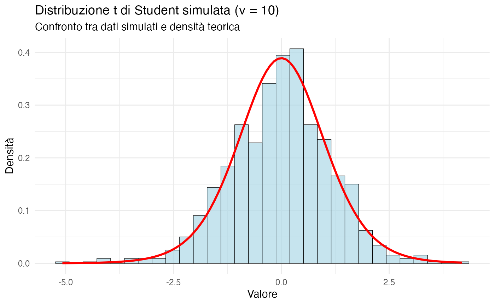
14.5.6 Proprietà teoriche
Valore atteso: \(\mathbb{E}[T] = 0\) per \(\nu > 1\).
Varianza: \(\mathbb{V}[T] = \frac{\nu}{\nu - 2}\) per \(\nu > 2\).
Proprietà di simmetria: la distribuzione risulta simmetrica rispetto allo zero, analogamente alla distribuzione normale standard.
Comportamento delle code: le code più pesanti rispetto alla normale riflettono una maggiore incertezza, particolarmente rilevante nell’analisi di campioni di dimensioni ridotte.
14.5.7 Ruolo nell’inferenza statistica
La distribuzione \(t\) di Student costituisce uno strumento versatile nell’inferenza statistica, trovando applicazione in contesti sia frequentisti che bayesiani. Risulta particolarmente utile in situazioni dove la conoscenza della varianza risulta limitata o quando si lavora con campioni di dimensioni ridotte.
Nel contesto bayesiano, la distribuzione \(t\) viene impiegata come distribuzione a priori robusta per modellare parametri che possono assumere valori plausibilmente lontani dalla media, ma con una penalizzazione graduale per valori estremi. Funge inoltre da distribuzione predittiva per sintetizzare l’incertezza derivante da campioni piccoli o caratterizzati da elevata variabilità.
In entrambi i paradigmi inferenziali, la distribuzione \(t\) rappresenta una scelta robusta, in grado di riflettere in modo flessibile la natura dei dati. La proprietà di convergenza alla distribuzione Normale per valori elevati dei gradi di libertà ne estende ulteriormente l’utilità in diversi contesti analitici, fornendo un ponte naturale tra situazioni di incertezza elevata e condizioni di relativa stabilità statistica.
14.6 Funzione Beta di Eulero
La funzione Beta di Eulero è una funzione matematica, non una densità di probabilità, ma è strettamente collegata alla distribuzione Beta, poiché appare nella sua definizione. Indicata comunemente con il simbolo \(\mathcal{B}(\alpha, \beta)\), la funzione Beta può essere espressa in vari modi. Per i nostri scopi, utilizziamo la seguente definizione:
\[ \mathcal{B}(\alpha, \beta) = \frac{\Gamma(\alpha)\Gamma(\beta)}{\Gamma(\alpha + \beta)}\,, \tag{14.6}\] dove \(\Gamma(x)\) rappresenta la funzione Gamma, una generalizzazione del fattoriale definita per numeri reali positivi. Quando \(x\) è un numero intero, la funzione Gamma si riduce al fattoriale traslato:
\[ \Gamma(x) = (x-1)!. \]
Esempio 14.1 Supponiamo di voler calcolare \(\mathcal{B}(3, 9)\). Utilizzando la definizione, abbiamo:
\[ \mathcal{B}(3, 9) = \frac{\Gamma(3) \cdot \Gamma(9)}{\Gamma(3 + 9)}. \]
In R, possiamo calcolarla in tre modi diversi.
- Utilizzando la definizione con la funzione
gamma():
- Utilizzando direttamente la funzione
beta()di R:
beta(alpha, beta)
#> [1] 0.00202- Calcolo manuale con fattoriali:
Tutti e tre i metodi restituiscono lo stesso risultato, confermando la correttezza della definizione.
La funzione Beta è utilizzata nella definizione della densità di probabilità Beta. Essa serve a normalizzare la densità, garantendo che l’area sotto la curva sia pari a \(1\).
14.7 Distribuzione Beta
La distribuzione Beta, indicata come \(\mathcal{Beta}(\alpha, \beta)\), è una distribuzione continua definita sull’intervallo \((0, 1)\). È particolarmente utile quando vogliamo descrivere incertezza su proporzioni o probabilità, cioè grandezze che devono rimanere comprese tra 0 e 1.
Uno dei motivi per cui la Beta è così diffusa in statistica bayesiana è la sua flessibilità: a seconda dei valori dei parametri \(\alpha\) e \(\beta\), la densità può essere simmetrica o asimmetrica, piatta o concentrata, convessa o concava, fino a concentrarsi agli estremi 0 e 1. Questo permette di modellare diverse situazioni di conoscenza a priori.
14.7.1 Definizione
Definizione 14.1 Se \(\theta\) segue una distribuzione Beta con parametri \(\alpha > 0\) e \(\beta > 0\), scriviamo:
\[ \theta \sim \mathcal{Beta}(\alpha, \beta). \]
La sua densità è:
\[ f(\theta \mid \alpha, \beta) \;=\; \frac{1}{\mathcal{B}(\alpha,\beta)} \, \theta^{\alpha - 1} (1 - \theta)^{\beta - 1}, \quad \theta \in (0,1), \] dove \(\mathcal{B}(\alpha,\beta)\) è la funzione Beta di Eulero (una costante di normalizzazione che assicura che l’area sotto la curva sia 1).
Un’espressione equivalente, che mette in luce il legame con la funzione Gamma, è:
\[ f(\theta \mid \alpha, \beta) \;=\; \frac{\Gamma(\alpha+\beta)}{\Gamma(\alpha)\,\Gamma(\beta)} \,\theta^{\alpha - 1}(1-\theta)^{\beta - 1}, \] dove \(\Gamma(\cdot)\) generalizza il fattoriale: \(\Gamma(n) = (n-1)!\) per ogni intero positivo \(n\).
14.7.2 Ruolo dei parametri \(\alpha\) e \(\beta\)
I due parametri determinano la forma della distribuzione:
- \(\alpha > 1\): spinge la massa della distribuzione verso valori alti di \(\theta\) (vicini a 1).
- \(\beta > 1\): spinge la massa verso valori bassi di \(\theta\) (vicini a 0).
- \(\alpha = \beta = 1\): distribuzione uniforme su \((0,1)\).
- \(\alpha, \beta < 1\): distribuzione a “U”, con più probabilità vicino a 0 e 1.
Le proprietà principali sono:
- media: \(\mathbb{E}(\theta) = \dfrac{\alpha}{\alpha + \beta}\);
- varianza: \(\mathbb{V}(\theta) = \dfrac{\alpha \beta}{(\alpha + \beta)^2(\alpha + \beta + 1)}\);
- moda (se \(\alpha,\beta > 1\)): \(\dfrac{\alpha-1}{\alpha + \beta - 2}\).
14.7.3 Perché nella formula compaiono \(\alpha - 1\) e \(\beta - 1\)?
Una questione che sorge naturalmente riguarda l’interpretazione dei parametri \(\alpha\) e \(\beta\) nella distribuzione Beta. Nel contesto bayesiano, questi parametri vengono comunemente interpretati come “pseudo-conteggi”, rappresentando idealmente un certo numero di successi e insuccessi immaginari che incorporano la nostra informazione a priori.
Tuttavia, emerge una apparente contraddizione: se \(\alpha\) e \(\beta\) rappresentano effettivamente questi conteggi, perché nella formulazione della funzione di densità non compaiono direttamente, ma troviamo invece gli esponenti \(\alpha - 1\) e \(\beta - 1\)?
La spiegazione risiede nella struttura matematica della distribuzione e nella sua interpretazione probabilistica:
la funzione di densità Beta presenta la forma \(\theta^{\alpha-1}(1-\theta)^{\beta-1}\);
quando impostiamo \(\alpha = 1\) e \(\beta = 1\), otteniamo \(f(\theta) \propto \theta^0 (1-\theta)^0 = 1\), che corrisponde a una distribuzione uniforme;
questo risultato indica che \(\alpha = 1\) equivale a zero successi immaginari, non a uno successo immaginario;
-
in termini generali:
- \(\alpha - 1\) rappresenta il numero di “successi immaginari” incorporati nella distribuzione a priori;
- \(\beta - 1\) rappresenta il numero di “insuccessi immaginari” incorporati nella distribuzione a priori.
Questa interpretazione risulta particolarmente elegante nel processo di aggiornamento bayesiano. Quando osserviamo i dati empirici, questi pseudo-conteggi si combinano con i conteggi osservati, producendo la distribuzione a posteriori:
\[ \text{Posterior} \;\sim\; \mathcal{Beta}(\alpha + W, \; \beta + L), \] dove \(W\) indica il numero di successi osservati e \(L\) il numero di insuccessi osservati. La coerenza di questo meccanismo di aggiornamento sottolinea l’interpretazione dei parametri come informazione a priori espressa in termini di conteggi equivalenti.
14.7.4 Relazione con la distribuzione binomiale
La distribuzione binomiale risponde alla domanda: “Qual è la probabilità di osservare \(W\) successi su \(n\) prove, dato un certo \(\theta\)?”. La sua forma è:
\[ L(\theta) \;\propto\; \theta^W (1-\theta)^{n-W}. \]
Confrontiamo questa formula con quella della distribuzione Beta:
- la distribuzione binomiale ha esponenti \(W\) e \(n-W\);
- la distribuzione Beta ha esponenti \(\alpha - 1\) e \(\beta - 1\).
Possiamo quindi interpretare la distribuzione Beta come il caso “continuo” in cui partiamo da pseudo-conteggi \((\alpha-1, \beta-1)\) e li aggiorniamo con i dati reali.
In sintesi,
- la distribuzione Beta è una famiglia flessibile su \((0,1)\);
- \(\alpha\) e \(\beta\) possono essere visti come “successi e insuccessi immaginari + 1”;
- Il “–1” negli esponenti è una conseguenza della definizione analitica della distribuzione Beta: serve a fare sì in modo che \(\alpha=1,\beta=1\) corrispondano all’assenza di informazione (prior uniforme);
- questo la rende la partner naturale della distribuzione binomiale: prior Beta + likelihood binomiale = posterior Beta.
14.7.5 Visualizzazione della Distribuzione Beta
Di seguito mostriamo come la forma della distribuzione Beta varia al variare dei parametri \(\alpha\) e \(\beta\):
# Parametri
x <- seq(0, 1, length.out = 200)
alphas <- c(0.5, 5.0, 1.0, 2.0, 2.0)
betas <- c(0.5, 1.0, 3.0, 2.0, 5.0)
# Creare un dataframe
df <- do.call(rbind, lapply(1:length(alphas), function(i) {
data.frame(
x = x,
density = dbeta(x, alphas[i], betas[i]),
label = paste0("α = ", alphas[i], ", β = ", betas[i])
)
}))
# Plot
ggplot(df, aes(x = x, y = density, color = label)) +
geom_line(size = 1) +
labs(
x = "x",
y = "f(x)"
) +
theme(legend.title = element_blank())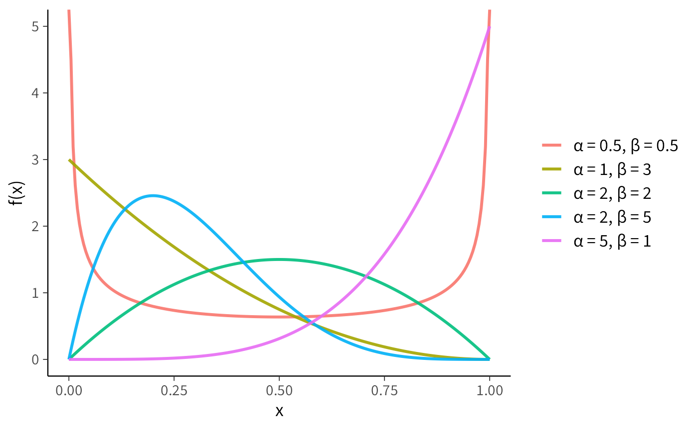
14.7.6 Costante di normalizzazione
La costante di normalizzazione della distribuzione Beta è il reciproco della funzione Beta di Eulero, \(B(\alpha, \beta)\). Questa garantisce che:
\[ \int_0^1 \mathcal{Beta}(\theta \mid \alpha, \beta) \, d\theta = 1. \]
Esempio 14.2 Di seguito viene proposto un esempio in R per calcolare l’area sottesa alla distribuzione Beta non normalizzata e, con gli stessi parametri, ottenere il valore della funzione Beta di Eulero. L’obiettivo è mostrare come la costante di normalizzazione, pari al reciproco di \(B(\alpha, \beta)\), garantisca che l’integrale della densità normalizzata su \([0,1]\) sia pari a 1.
Supponiamo di voler utilizzare i parametri:
- \(\alpha = 2\)
- \(\beta = 5\)
# Parametri della distribuzione Beta
alpha <- 2
beta <- 5
# Definiamo la funzione non normalizzata della distribuzione Beta
unnormalized_beta <- function(theta) {
theta^(alpha - 1) * (1 - theta)^(beta - 1)
}
# Calcoliamo l'integrale della funzione non normalizzata su [0, 1]
integrale <- integrate(unnormalized_beta, lower = 0, upper = 1)$value
cat("Integrale della funzione non normalizzata:", integrale, "\n")
#> Integrale della funzione non normalizzata: 0.0333
# Calcoliamo il valore della funzione Beta usando la funzione beta() di R
valore_beta <- beta(alpha, beta)
cat("Valore della funzione Beta B(alpha, beta):", valore_beta, "\n")
#> Valore della funzione Beta B(alpha, beta): 0.0333Spiegazione del Codice
Definizione dei Parametri e della Funzione
Impostiamo \(\alpha = 2\) e \(\beta = 5\) e definiamo la funzione non normalizzata: \[ f(\theta) = \theta^{\alpha-1}(1-\theta)^{\beta-1}. \]Calcolo dell’Integrale
Utilizzando la funzioneintegrate(), calcoliamo l’area sottesa a \(f(\theta)\) nell’intervallo \([0,1]\), che corrisponde a \(\mathcal{B}(\alpha, \beta)\).Verifica con la Funzione Beta
La funzionebeta(alpha, beta)di R restituisce direttamente il valore di \(\mathcal{B}(\alpha, \beta)\). La stampa dei due valori conferma che l’integrale calcolato e il valore della funzione Beta coincidono.Costante di Normalizzazione
Il reciproco di \(\mathcal{B}(\alpha, \beta)\) è calcolato e utilizzato per definire la densità normalizzata della distribuzione Beta. L’integrazione della densità normalizzata su \([0,1]\) restituisce 1, confermando la corretta normalizzazione.
Questo esempio in R mostra in modo pratico come la costante di normalizzazione derivi dalla funzione Beta di Eulero e come essa venga applicata per ottenere una densità di probabilità correttamente normalizzata.
In conclusione, la distribuzione beta si rivela particolarmente utile per modellare variabili continue comprese nell’intervallo [0, 1]. Grazie alla sua parametrizzazione tramite \(\alpha\) e \(\beta\), la distribuzione Beta consente di adattare la forma della densità in modo specifico alle caratteristiche osservate dei dati, facilitando la stima delle proporzioni. Inoltre, essendo il coniugato della distribuzione binomiale, permette un aggiornamento analitico nei modelli bayesiani, semplificando l’inferenza quando si raccolgono dati incrementali, come nella stima della probabilità di successo di esperimenti o studi psicologici.
14.8 Distribuzione di Cauchy
La distribuzione di Cauchy è un caso speciale della distribuzione \(t\) di Student con un solo grado di libertà (\(t_1\)). Questa distribuzione è caratterizzata da code molto pesanti e da una media e una varianza non definite, il che la rende particolarmente utile in contesti in cui i valori estremi possono avere un’influenza importante.
Definizione 14.2 La funzione di densità di probabilità della distribuzione di Cauchy è definita da due parametri:
- \(\alpha\): posizione (location), che determina il centro della distribuzione;
- \(\beta > 0\): scala (scale), che controlla la larghezza della distribuzione.
La densità è data da:
\[ f(x \mid \alpha, \beta) = \frac{1}{\pi \beta \left[1 + \left( \frac{x - \alpha}{\beta} \right)^2\right]} , \] dove:
- \(x \in \mathbb{R}\),
- \(\alpha \in \mathbb{R}\),
- \(\beta > 0\).
Questa funzione descrive una distribuzione simmetrica attorno a \(\alpha\), con code più pesanti rispetto alla distribuzione Normale.
14.8.1 Proprietà della distribuzione di Cauchy
- Simmetria: La distribuzione è simmetrica rispetto a \(\alpha\).
- Code Pesanti: Le code sono significativamente più pesanti rispetto alla distribuzione Normale, con una decrescita più lenta (\(\propto x^{-2}\)).
- Media e varianza: La distribuzione non ha una media né una varianza definita.
- Relazione con \(t_1\): La distribuzione di Cauchy è equivalente a una distribuzione \(t\) di Student con 1 grado di libertà.
- Caratteristiche estreme: I valori estremi hanno una probabilità più alta rispetto ad altre distribuzioni comuni, rendendola utile per modellare fenomeni con outlier significativi.
14.8.2 Visualizzazione della distribuzione di Cauchy
Per comprendere l’effetto dei parametri \(\alpha\) e \(\beta\) sulla forma della distribuzione, consideriamo alcuni esempi con:
- \(\alpha = 0.0, 0.0, 0.0, -2.0\),
- \(\beta = 0.5, 1.0, 2.0, 1.0\).
# Definire i parametri
x <- seq(-5, 5, length.out = 500)
alphas <- c(0.0, 0.0, 0.0, -2.0)
betas <- c(0.5, 1.0, 2.0, 1.0)
# Creare un data frame per i risultati
df <- do.call(rbind, lapply(1:length(alphas), function(i) {
data.frame(
x = x,
density = dcauchy(x, location = alphas[i], scale = betas[i]),
label = paste0("α = ", alphas[i], ", β = ", betas[i])
)
}))
# Grafico
ggplot(df, aes(x = x, y = density, color = label)) +
geom_line(size = 1) +
labs(
x = "x",
y = "f(x)"
) +
theme(
legend.title = element_blank()
)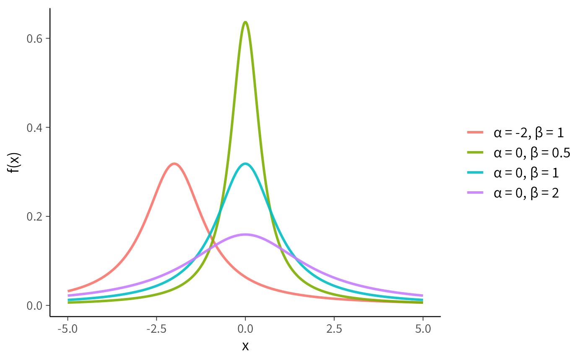
14.8.3 Applicazioni della distribuzione di Cauchy
Inferenza Bayesiana.
La distribuzione di Cauchy viene impiegata come distribuzione a priori robusta in modelli bayesiani, in particolare quando si intende attribuire una probabilità significativa ai valori estremi senza penalizzarli eccessivamente, a differenza di quanto avverrebbe con una distribuzione normale. Questa caratteristica la rende adatta in contesti in cui le credenze a priori devono essere sufficientemente diffuse da poter includere potenziali osservazioni inattese.
Modellazione di Fenomeni con Outlier.
La distribuzione di Cauchy si rivela appropriata per descrivere dati che presentano valori estremi significativi che potrebbero influenzare in modo sproporzionato i modelli basati su distribuzioni dalla coda più leggera. La sua struttura probabilistica permette di incorporare naturalmente l’incertezza associata alle osservazioni anomale, senza richiedere meccanismi aggiuntivi per la gestione degli outlier.
In conclusione, la distribuzione di Cauchy, con le sue proprietà distintive, quali le code pesanti e l’assenza di momenti di ordine superiore, rappresenta uno strumento fondamentale per la modellazione di fenomeni in cui i valori estremi rivestono un ruolo rilevante. La sua relazione con la distribuzione t di Student e la sua utilità nell’ambito della modellazione bayesiana ne estendono l’applicazione ai contesti statistici e probabilistici avanzati, offrendo un’alternativa valida quando le assunzioni di normalità sono troppo restrittive.
14.9 Distribuzione Gamma
La distribuzione Gamma rappresenta una distribuzione di probabilità continua ampiamente utilizzata per modellare variabili strettamente positive, come tassi, varianze o tempi di attesa. Nell’ambito della statistica bayesiana viene frequentemente impiegata come distribuzione a priori per parametri positivi e trova significative applicazioni nella modellazione di eventi rari e processi temporali.
Definizione 14.3 La distribuzione Gamma è caratterizzata da due parametri fondamentali:
- parametro di forma (\(\alpha\)): determina la configurazione generale della distribuzione;
- parametro di scala (\(\theta\)) o, in forma alternativa, parametro di tasso (\(\beta = 1/\theta\)): regola l’ampiezza e la dispersione della distribuzione.
La funzione di densità di probabilità è espressa da:
\[ f(x \mid \alpha, \theta) = \frac{x^{\alpha-1} e^{-x/\theta}}{\theta^\alpha \Gamma(\alpha)}, \quad x > 0, \] dove:
- \(x\) rappresenta la variabile casuale continua;
- \(\Gamma(\alpha)\) denota la funzione Gamma di Eulero, definita come:
\[ \Gamma(\alpha) = \int_0^\infty t^{\alpha-1} e^{-t} dt. \]
Utilizzando il parametro di tasso \(\beta = 1/\theta\), la funzione di densità assume la forma:
\[ f(x \mid \alpha, \beta) = \frac{\beta^\alpha x^{\alpha-1} e^{-\beta x}}{\Gamma(\alpha)}, \quad x > 0. \]
14.9.1 Proprietà Fondamentali
Valore atteso: \[ \mathbb{E}[X] = \alpha \cdot \theta = \frac{\alpha}{\beta}. \]
Varianza: \[ \text{Var}(X) = \alpha \cdot \theta^2 = \frac{\alpha}{\beta^2}. \]
Moda (per \(\alpha > 1\)): \[ \text{Moda}(X) = (\alpha - 1) \cdot \theta. \]
14.9.2 Esempio illustrativo
Consideriamo una distribuzione Gamma con parametri \(\alpha = 3\) e \(\beta = 5/3\).
Calcolo dei momenti della distribuzione:
# Parametri della distribuzione
alpha <- 3
beta <- 5 / 3
# Calcolo dei momenti
media <- alpha / beta
deviazione_standard <- sqrt(alpha / beta^2)
cat("Valore atteso:", round(media, 3), "\n")
#> Valore atteso: 1.8
cat("Deviazione standard:", round(deviazione_standard, 3), "\n")
#> Deviazione standard: 1.04Simulazione e visualizzazione della distribuzione:
# Generazione di dati dalla distribuzione Gamma
set.seed(123)
dati_gamma <- rgamma(100000, shape = alpha, rate = beta)
# Preparazione dei dati per la visualizzazione
df_gamma <- data.frame(valori = dati_gamma)
# Creazione del grafico
ggplot(df_gamma, aes(x = valori)) +
geom_histogram(
aes(y = after_stat(density)),
bins = 50, fill = "lightgreen", alpha = 0.7, color = "black"
) +
stat_function(
fun = function(x) dgamma(x, shape = alpha, rate = beta),
color = "darkred", linewidth = 1.2
) +
labs(
title = "Distribuzione Gamma (α = 3, β = 5/3)",
subtitle = "Confronto tra dati simulati e densità teorica",
x = "Valore",
y = "Densità di probabilità"
) +
theme_minimal()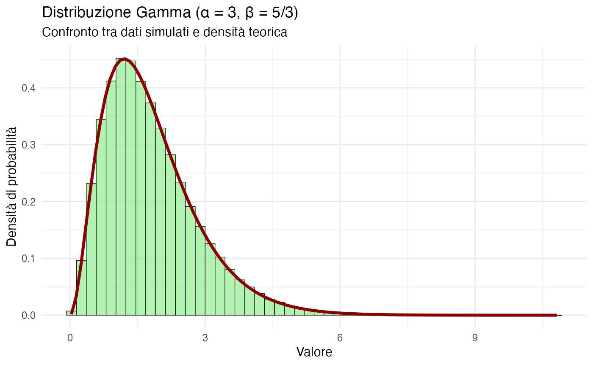
14.9.3 Applicazioni della distribuzione Gamma
Modellazione del tempo di attesa.
La distribuzione Gamma si presta particolarmente bene alla modellazione dei tempi di attesa, come ad esempio il tempo necessario affinché si verifichino n eventi in un processo di Poisson. Questa applicazione sfrutta la relazione matematica tra la distribuzione Gamma e il processo di Poisson.
Inferenza bayesiana.
La distribuzione Gamma viene utilizzata come distribuzione a priori per i parametri positivi, come i tassi (\(\lambda\)) o le varianze (\(\sigma^2\)). Nella modellazione bayesiana dei processi di Poisson, la distribuzione Gamma è la scelta naturale per la distribuzione a priori del parametro \(\lambda\), grazie alla sua proprietà di coniugazione che garantisce aggiornamenti analiticamente trattabili.
Riflessioni conclusive
Le distribuzioni di probabilità costituiscono il fondamento concettuale dell’inferenza statistica, sia nell’approccio bayesiano che in quello frequentista. In questo capitolo, abbiamo esplorato come il linguaggio R fornisca un repertorio completo di strumenti per lavorare con diverse distribuzioni, consentendo di modellare e analizzare sistematicamente un’ampia gamma di fenomeni empirici.
Applicazioni principali
Nell’ambito dell’inferenza bayesiana, le distribuzioni di probabilità come la Beta, la Gamma e la Normale sono fondamentali per definire le distribuzioni a priori, calcolare le distribuzioni a posteriori e quantificare in modo coerente l’incertezza nei modelli probabilistici. La distribuzione Beta è ideale per modellare credenze a priori riguardo a proporzioni o probabilità, mentre la distribuzione Gamma trova ampia applicazione per parametri positivi come tassi o varianze, grazie alle sue proprietà di coniugazione che facilitano l’aggiornamento bayesiano.
Per quanto riguarda l’analisi statistica e la modellazione, distribuzioni come la \(t\) di Student sono fondamentali per il confronto tra campioni, soprattutto in situazioni di piccola dimensione campionaria o varianza sconosciuta. La distribuzione normale, d’altro canto, rimane indispensabile per modellare fenomeni che seguono la legge del limite centrale, offrendo una rappresentazione matematica elegante per variabili risultanti dalla combinazione di molti fattori indipendenti.
La generazione e la simulazione di dati costituiscono un’altra applicazione cruciale, resa accessibile dalle funzioni di R che permettono di generare campioni casuali da distribuzioni specifiche. Questa capacità è preziosa per le procedure di simulazione, i metodi di bootstrap e i processi di validazione dei modelli statistici.
Funzionalità di R per le distribuzioni di probabilità
Il linguaggio R offre un insieme coerente e integrato di funzioni che operano su quattro aspetti fondamentali delle distribuzioni di probabilità. Le funzioni di generazione casuale come rnorm, rgamma e rbeta permettono di simulare dati da distribuzioni specifiche e supportano l’analisi mediante metodi computazionali. Le funzioni di densità, come dnorm, dgamma e dbeta, facilitano la visualizzazione e l’analisi delle funzioni di densità di probabilità, mentre le funzioni di distribuzione cumulativa come pnorm e pbeta, permettono il calcolo delle probabilità su intervalli definiti. A completare il quadro ci sono le funzioni quantili, rappresentate da qnorm e qgamma, che determinano i punti corrispondenti a specifici livelli di probabilità cumulativa.
Versatilità delle distribuzioni
Le distribuzioni esaminate non si limitano a descrivere fenomeni naturali, ma costituiscono gli elementi costitutivi fondamentali per la costruzione di complessi modelli statistici. Le loro proprietà distintive, dalla media e dalla varianza alla simmetria e al comportamento delle code, permettono di adattare strategicamente il modello alle caratteristiche specifiche del fenomeno oggetto di studio, garantendo una rappresentazione probabilistica appropriata e informativa.
In sintesi, il linguaggio R, grazie alla sua flessibilità operativa e alla varietà degli strumenti disponibili, consente di padroneggiare le distribuzioni di probabilità non solo come entità matematiche astratte, ma anche come strumenti analitici pratici per affrontare questioni empiriche complesse. La comprensione approfondita e l’uso competente delle distribuzioni presentate sono le basi essenziali per progredire verso metodologie statistiche più sofisticate, come l’inferenza bayesiana avanzata e la modellazione gerarchica, che rappresentano l’avanguardia dell’analisi statistica contemporanea.